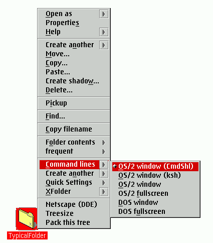
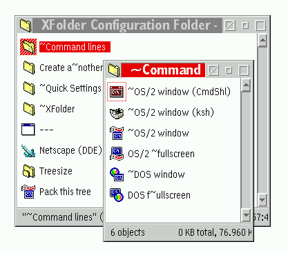

Dies geschieht mit Hilfe eines separaten Konfigurationsordners, der genau wie ein normaler WPS-Ordner aussieht. Das Installationsskript plaziert ihn im Ordner "&xwp;-Installation" auf Ihrer Arbeitsoberfl„che, aber Sie k”nnen ihn irgendwohin schieben, wo es Ihnen paát.
Alles, was Sie in diesen Konfigurationsordner stellen, erscheint sofort in den Kontextmen�s aller Ordner im System.
Um dies zu verdeutlichen, sei hier die Standardkonfiguration noch einmal erl„utert:

Der Standard-Konfigurationsordner sieht folgendermaáen aus:

Wie man sieht, korrespondieren die Ordner und Programmobjekte im XFolder-Konfigurationsordner genau mit den Eintr„gen des Kontextmen�s. Wenn Sie dem Konfigurationsordner also etwas hinzuf�gen oder ein Objekt daraus entfernen, hat das sofortigen Einfluá auf alle Kontextmen�s der Ordner.
Die Aktion, die XFolder ausf�hrt, wenn ein Kontextmen�eintrag ausgew„hlt wird, h„ngt jedoch vom Typen des Objektes ab, welches dem Men�eintrag entspricht. F�r Details �ber die Funktionsweise all dessen ”ffnen Sie bitte den &xwp;-Installationsordner und w„hlen Sie "Hilfe" aus dem Kontextmen� des Konfigurationsordners, den Sie dort finden.
So simpel dies auch erscheinen mag, so ist diese kombinierte Order/Objekt-Methode des XFolder-Konfigurationsordners doch sehr leistungsf„hig. Sie k”nnen all Ihre Lieblingsprogramme, -schablonen und -datendateien dort hineinstellen, die sinnvollerweise in jedem Verzeichnis ausgef�hrt werden k”nnen sollten.
Wenn Sie REXX programmieren k”nnen, stehen Sie noch besser da: Sie k”nnen Ihre eigenen Skripte
schreiben, die die WPS manipulieren, von diesen Programmobjekte erzeugen und diese in den
Konfigurationsordner stellen. Siehe hierzu die Seite
"Frequently Asked Questions" mit weiterf�hrenden Informationen.